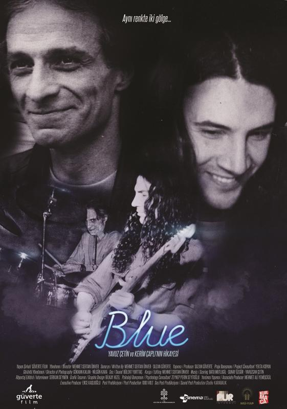

Merhaba ben Soner. 22 yaşında, dünyadaki konumunu ve aynı zamanda kendi hayat akışında benliğinin ne denli etken olduğunu bir türlü belirleyememiş bir gencim. Süre ve içerik bakımından fazlaca gereksiz düşüncelerimi bastırmak için çeşitli ve maliyeti düşük hobiler edindim. Müzik dinlemeyi çok severim mesela ve iyisinin peşinde sürekli bir arama peşindeyim diyebilirim. Bir dönem gitar da çalmıştım fakat 3 yılın ardından hevesimi kaybettim. Bu sıralar o heves geri gelmiş olsa da cüzdanımdaki dev boşluk şu anlık bu konu üzerinde çalışmamı engelliyor. Her neyse. diğer hobilerimden bahsedecek olursam okumayı ve araştırmayı severim. Yazılım öğrenmeye de bu sebepten başladım diyebilirim. Şimdilik bu kadar.
İlk paragrafı yazarken farkedememişim, bu ödev diğer başlık kısaltmalarını da kullanmamızı istiyor. Bu yüzden şimdi çok sevdiğim bir gitarist olan Yavuz Çetin'den bahsedeceğim.
Şahane gitar solosuyla kendine listede yer buluyor
Enstrümantal yapıda olan bu parçada Erkan Oğur perdesiz gitar çalmakta
Örnekleri burada noktalıyorum çünkü Yavuz Çetin'in sevmediğim herhangi bir parçası yok.
Son olarak kendisinin hayatının anlatıldığı 2017 yapımlı Blue isimli bir belgesel de mevcut. Bu belgeselde kendisini seven ve dönemdaşı birçok müzisyenle konuşulmuş.
Blue 